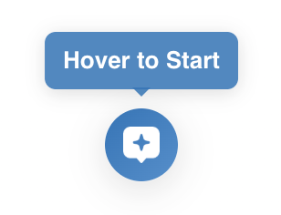
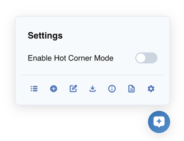

Open Prompt Manager
Open Source & Forever Simple.

Hover to Start...
Or check out Keyboard Shortcuts.

...And Explore
Hot Corner, variables, context menu, tags, and more.
How would you like to open your prompts?
Choose your preferred launcher. You can change this anytime in Settings.
Features
-
Your prompts, in a single click Just hover to get started.
-
Available everywhere you need it Works on any website.
-
Advanced features Prompt Variables, Tags, Search, Append prompts, Easy Import.
-
Keyboard Shortcuts Keyboard shortcuts and navigation.
-
Clean & Simple User friendly, Light & Dark mode.
-
Open Source No account required, full privacy.
Choose an AI Assistant below to get started.
AI Assistants
To add a site that isn't listed above, open that website in your browser, open the Open Prompt Manager sidebar, and click + Custom website under Assistants. Then click the chat input on the page.